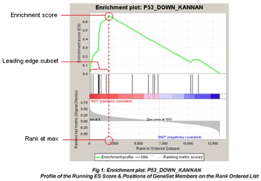

Chapter 8 Functional analysis of RNAseq data
8.0.1 Ontology and GO Terms
Ontology: An ontology is a representation of something we know about. Ontologies consist of representations of things that are detectable or directly observable and the relationships between those things. The Gene Ontology (GO) project provides an ontology of defined terms representing gene product properties. These terms are connected to each other via formally defined relationships, allowing for consistent annotation and analysis of gene functions across different species and research areas.
8.0.2 GO Terms (Gene Ontology Terms)
The GO terms describe three aspects of gene products:
- Biological Process: Refers to the biological objectives achieved by gene products, such as “cell division” or “response to stress.”

Molecular Function: Describes the biochemical activities at the molecular level, such as “enzyme activity” or “DNA binding.”
Cellular Component: Indicates where gene products are located within the cell, like “nucleus” or “mitochondrion.”
8.0.3 GO Enrichment Methods

GO enrichment methods help interpret differentially expressed gene lists from RNA-Seq data and include the following:
- Overrepresentation Analysis (ORA):
- ORA assesses whether specific GO terms are over-represented in a gene list compared to the background set of genes (e.g., all genes in the genome). Over-represented GO terms indicate biological functions or processes that are significantly associated with the genes of interest.

 `
`
- Hypergeometric Test: The hypergeometric test in GO enrichment analysis is used to determine whether a set of genes is enriched for specific GO terms compared to the background set of genes. The test calculates the probability of observing the overlap between the query gene set and the gene set associated with a particular GO term, given the total number of genes in the dataset and the number of genes in the background set.
The formula for the cumulative probability of observing at most \(q\) successes (the lower-tail probability) in a sample of size \(k\) from a population with \(m\) successes and \(N - m\) failures is: \[ P(X \leq q) = \sum_{i=0}^{q} \frac{\binom{m}{i} \binom{N - m}{k - i}}{\binom{N}{k}} \] Where:
q: The number of genes in your list of interest that are annotated with a specific GO term (e.g., genes in your differential expression results that are associated with “cell cycle regulation”).
m: The total number of genes in the background set (e.g., all genes in the genome) that are annotated with the specific GO term (e.g., all genes associated with “cell cycle regulation” in the entire dataset or genome).
N: The total number of genes in the background set.
k: The total number of genes in your gene list of interest
8.0.4 Example
Suppose:your background population has \(N = 20,000\) genes (e.g., the entire genome). Out of these, \(m = 500\) genes are associated with a specific GO term (e.g., “cell cycle regulation”). You have a list of \(k = 1000\) genes of interest. In this list, \(q = 30\) genes are associated with the “cell cycle regulation” GO term.
# Define parameters
N <- 20000 # Total genes in the background (population)
m <- 500 # Total genes associated with the GO term in the background
k <- 1000 # Sample size (genes in your list)
q <- 50 # Observed number of successes (overlap with GO term)
# Perform the hypergeometric test (upper-tail probability)
p_value <- phyper(q - 1, m, N - m, k, lower.tail = FALSE)
p_value## [1] 2.551199e-06- Gene Set Enrichment Analysis (GSEA): Instead of only considering genes above a certain threshold (e.g., differentially expressed genes), GSEA looks at the entire ranked list of genes (e.g., ranked by their expression levels) and checks whether genes associated with a certain GO term are statistically over-represented at the top or bottom of a ranked gene list, indicating coordinated changes in gene expression.
Here’s how GSEA works:
Gene Ranking: Genes are ranked based on a metric that reflects their differential expression, such as log2FoldChange.
Enrichment Score (ES): GSEA calculates an Enrichment Score (ES) for each gene set by walking down the ranked list, increasing the score when a gene belongs to the set and decreasing it otherwise. A positive ES suggests upregulation, while a negative ES suggests downregulation of the gene set.
Example: The GSEA enrichment plot provides a graphical view of the enrichment score for a gene set:
 - The top portion of the plot shows the running ES for the gene set as the analysis walks down the ranked list. The score at the peak of the plot (the score furthest from 0.0) is the ES for the gene set.
The middle portion of the plot shows where the members of the gene set appear in the ranked list of genes.
The leading edge subset of a gene set is the subset of members that contribute most to the ES.
The bottom portion of the plot shows the value of the ranking metric (such as log2FoldChange) as you move down the list of ranked genes.
8.0.5 Over-representation Analysis (ORA) using clusterProfiler
# Uncomment the following if you haven't yet installed the required packages
# BiocManager::install(c("ggraph", "igraph", "visNetwork",
# "GO.db", "GOSemSim"), force = TRUE)
# IMPORTANT!!! Uncomment the following to update the GOenrichment package
# remove.package("GOenrichment")
# devtools::install_github("gurinina/GOenrichment", force = TRUE)
## Load required libraries
library(org.Hs.eg.db)#
library(clusterProfiler)#
library(tidyverse)
library(enrichplot)#
library(fgsea) #
library(igraph)
library(ggraph)
library(visNetwork)
library(GO.db)
library(GOSemSim)
library(GOenrichment)
library(tidyr)8.0.5.1 Running clusterProfiler: we first need to load the results of the differential expression analysis.
res_tableOE = readRDS("data/res_tableOE.RDS")
res_tableOE_tb <- res_tableOE %>%
data.frame() %>% rownames_to_column(var = "gene") %>%
dplyr::filter(!is.na(log2FoldChange)) %>% as_tibble()To perform the over-representation analysis, we need a list of background genes and a list of significant genes:
## background set of genes
allOE_genes <- res_tableOE_tb$gene
sigOE = dplyr::filter(res_tableOE_tb, padj < 0.05)
## significant genes
sigOE_genes = sigOE$geneTheenrichGO() function performs the ORA for the significant genes of interest (sigOE_genes) compared to the background gene list (allOE_genes) and returns the enriched GO terms and their associated p-values.
## Run GO enrichment analysis
ego <- enrichGO(gene = sigOE_genes,
universe = allOE_genes,
keyType = "SYMBOL",
OrgDb = org.Hs.eg.db,
minGSSize = 20,
maxGSSize = 300,
ont = "BP",
pAdjustMethod = "BH",
qvalueCutoff = 0.05,
readable = TRUE)We can extract the gene lists associated with each enriched GO term from the ego object to create edges between terms based on shared genes.
## [1] "ID" "Description" "GeneRatio" "BgRatio" "pvalue"
## [6] "p.adjust" "qvalue" "geneID" "Count"| ID | Description | GeneRatio | BgRatio | pvalue | p.adjust | qvalue | geneID | Count | |
|---|---|---|---|---|---|---|---|---|---|
| GO:0006403 | GO:0006403 | RNA localization | 110/5343 | 188/14702 | 0 | 6.0e-07 | 5.0e-07 | ALKBH5/ALYREF/ARC/ATR/ATXN2/BICD1/CASC3/CCT2/CCT3/CCT5/CCT6A/CCT7/CETN2/CETN3/CHTOP/DCP2/DDX19A/DDX39A/DHX9/DKC1/EIF4A3/EIF5AL1/ENY2/EXOSC10/FBL/FMR1/FUBP3/FYTTD1/GLE1/HNRNPU/HSF1/IGF2BP1/IGF2BP2/KHDRBS1/KHSRP/KPNB1/MCM3AP/MVP/MYO1C/NCBP1/NHP2/NOL6/NOP10/NSUN2/NUP107/NUP133/NUP188/NUP205/NUP210/NUP214/NUP50/NUP54/NUP85/NUP88/NUP93/NUP98/NUTF2/NXF1/NXF3/NXT1/NXT2/PABPN1/PARN/PEG10/PHAX/PIH1D1/POLDIP3/POLR2D/POM121/POM121C/POM121L2/PRPF6/QKI/RAE1/RAN/RBM15B/RBM8A/RFTN1/RUVBL1/RUVBL2/SARNP/SEC13/SEH1L/SENP2/SETD2/SHQ1/SIDT2/SLBP/SMG5/SMG6/SMG7/SNUPN/SRSF3/SRSF7/STAU1/SUPT6H/TGFBR2/THOC1/THOC2/THOC6/THOC7/TOMM20/UPF1/XPO1/XPO5/YBX1/ZC3H11A/ZFP36/ZFP36L1/ZNF385A | 110 |
| GO:0042254 | GO:0042254 | ribosome biogenesis | 153/5343 | 282/14702 | 0 | 6.0e-07 | 5.0e-07 | AATF/ABCE1/ABT1/BMS1/BRIX1/BYSL/C1QBP/CHD7/CUL4A/CUL4B/DDX18/DDX21/DDX27/DDX28/DDX47/DDX49/DDX51/DDX54/DDX56/DHX30/DHX37/DKC1/EBNA1BP2/EIF2A/EIF4A3/EIF6/EMG1/ERAL1/ERCC2/ERI2/ERI3/EXOSC10/EXOSC3/EXOSC5/EXOSC6/EXOSC9/FBL/FBLL1/FCF1/FRG1/FTSJ3/GEMIN4/GLUL/GNL3L/GPATCH4/GRWD1/GTPBP10/HEATR1/HELB/IMP3/IMP4/ISG20L2/KRI1/LSG1/LSM6/LTV1/MAK16/MDN1/MPHOSPH10/MRPL1/MRPL20/MRPL36/MRPL44/MRPS11/MRPS2/MRPS7/MRTO4/MYBBP1A/NAT10/NGDN/NGRN/NHP2/NLE1/NMD3/NOC2L/NOC4L/NOL10/NOL11/NOL6/NOL8/NOL9/NOLC1/NOP10/NOP14/NOP16/NOP2/NSUN5/NUDT16/NUP88/PA2G4/PDCD11/PELP1/PES1/PIH1D1/POP4/PPAN/PWP1/PWP2/RAN/REXO4/RIOK3/RPL10A/RPL23A/RPL24/RPL26/RPL26L1/RPL7L1/RPP30/RPP40/RPS15/RPS27/RPS27L/RPSA/RPUSD1/RPUSD4/RRP1/RRP15/RRP1B/RRP36/RRP7A/RRP9/RRS1/RSL1D1/RSL24D1/SBDS/SDAD1/SHQ1/SIRT7/SRFBP1/SURF6/SUV39H1/TFB1M/TRMT112/TRMT2B/TSR1/TSR2/URB1/URB2/UTP14A/UTP15/UTP18/UTP20/UTP3/WDR18/WDR43/WDR46/WDR55/WDR74/XPO1/XRCC5/XRN2/YTHDF2/ZNF622 | 153 |
| GO:1903311 | GO:1903311 | regulation of mRNA metabolic process | 149/5343 | 274/14702 | 0 | 6.0e-07 | 5.0e-07 | AHCYL1/AKT1/ALKBH5/ANGEL2/APEX1/BTG2/C1QBP/CARHSP1/CASC3/CDK9/CELF1/CELF2/CELF3/CELF4/CIRBP/CLNS1A/CNOT10/CNOT7/CPEB1/CPEB3/CPSF7/CSDE1/DAZAP1/DCP1A/DCP2/DDX5/DHX34/DHX9/E2F1/EIF4A3/ELAVL1/EXOSC3/EXOSC5/EXOSC9/FAM172A/FASTK/FASTKD5/FMR1/FTO/FUS/FXR2/GDNF/GTPBP1/HNRNPA0/HNRNPD/HNRNPK/HNRNPL/HNRNPM/HNRNPU/HSF1/HSPA8/IGF2BP1/IGF2BP2/KHDRBS1/KHDRBS3/KHSRP/LARP1/LARP4B/LARP7/MAPKAPK2/MBNL1/MBNL2/MBNL3/METTL3/MLH1/MOV10/NCBP1/NCL/NOVA1/NUP98/PABPC1/PABPC4/PAF1/PAIP1/PAPOLA/PARN/PATL1/PDE12/POLR2D/POLR2G/PRDX6/PRKCA/PRMT5/PRPF19/PRR5L/PTBP1/PUF60/QKI/RAVER1/RAVER2/RBFOX2/RBM10/RBM11/RBM15/RBM15B/RBM23/RBM24/RBM3/RBM38/RBM39/RBM4/RBM42/RBM8A/RBMX/RC3H1/RC3H2/RNPS1/ROCK1/SAFB/SAFB2/SAMD4A/SAMD4B/SECISBP2/SF1/SF3B4/SFSWAP/SLTM/SMU1/SNRNP70/SRPK1/SRPK2/SRSF3/SRSF6/SRSF7/SRSF9/SUPT6H/SYNCRIP/TBRG4/TIA1/TIRAP/TNKS1BP1/TNRC6B/TOB1/TRAF2/TRAF5/TTC5/U2AF2/UPF1/VIM/WDR77/YBX1/YTHDF2/YTHDF3/ZBTB7A/ZC3H12A/ZC3H14/ZC3HAV1/ZFP36/ZFP36L1 | 149 |
| GO:0043484 | GO:0043484 | regulation of RNA splicing | 102/5343 | 172/14702 | 0 | 6.0e-07 | 5.0e-07 | AHNAK/AHNAK2/ATXN7L3/C1QBP/CCNL1/CCNL2/CDK12/CELF1/CELF2/CELF3/CELF4/CIRBP/CLK1/CLNS1A/DAZAP1/DDX5/ENY2/ERN1/ESRP1/FAM172A/FAM50A/FASTK/FMR1/FUS/FXR2/GRSF1/HNRNPF/HNRNPH2/HNRNPK/HNRNPL/HNRNPU/HOXB-AS3/HSPA1A/HSPA8/KAT2A/KHDRBS1/KHDRBS3/LARP7/MBNL1/MBNL2/MBNL3/NCBP1/NCL/NOVA1/NUP98/PIK3R1/POLR2A/PQBP1/PRDX6/PRMT5/PRPF19/PTBP1/PTBP2/PUF60/QKI/RAVER1/RAVER2/RBFOX2/RBM10/RBM11/RBM12B/RBM15/RBM15B/RBM22/RBM23/RBM24/RBM3/RBM38/RBM39/RBM4/RBM42/RBM8A/RBMX/RNPS1/RPS26/RRP1B/SF1/SF3B3/SF3B4/SFSWAP/SLC38A2/SMU1/SNRNP70/SRPK1/SRPK2/SRSF3/SRSF6/SRSF7/SRSF9/SUPT3H/TADA2B/TADA3/TAF5L/TAF6L/TIA1/TMBIM6/TRRAP/U2AF2/USP22/WDR77/ZBTB7A/ZNF326 | 102 |
| GO:0016571 | GO:0016571 | histone methylation | 86/5343 | 140/14702 | 0 | 1.0e-06 | 8.0e-07 | AASS/ARID4A/ARID4B/ASH1L/ASH2L/ATRX/AUTS2/BCOR/BEND3/BOD1/BRCA1/BRD4/CARM1/CHTOP/CLNS1A/CTCF/CTCFL/CTNNB1/CTR9/DOT1L/EHMT1/EHMT2/EZH1/FBL/FBLL1/GFI1/HCFC1/HCFC2/JARID2/KANSL3/KDM3A/KDM4A/MCRS1/MECOM/MECP2/MEN1/METTL23/MLLT6/MTF2/MTHFR/MYB/NCOA6/NFYA/NFYB/NFYC/NR1H4/NSD1/OGT/PAF1/PAXIP1/PHF19/PIH1D1/PRDM13/PRDM2/PRDM4/PRMT1/PRMT2/PRMT5/PRMT7/PWP1/PYGO2/RNF20/RTF1/SETD1A/SETD1B/SETD2/SETD3/SETD5/SETD6/SIRT7/SMARCA5/SMARCB1/SMYD3/SMYD5/SUPT6H/SUV39H1/SUZ12/TET1/TET2/TRMT112/WDR5/WDR5B/WDR77/WDR82/ZNF274/ZNF335 | 86 |
| GO:0051168 | GO:0051168 | nuclear export | 90/5343 | 150/14702 | 0 | 1.9e-06 | 1.6e-06 | ABCE1/AHCYL1/ALKBH5/ALYREF/ANP32B/BAG3/CASC3/CDK5/CHTOP/CSE1L/DDX19A/DDX39A/DHX9/DNAJC27/EIF4A3/EIF6/EMD/ENY2/FYTTD1/GAS6/GLE1/KHDRBS1/LSG1/LTV1/MCM3AP/MDN1/NCBP1/NEMF/NMD3/NOL6/NSUN2/NUP107/NUP133/NUP188/NUP214/NUP85/NUP88/NUP93/NUTF2/NXF1/NXF3/NXT1/PABPN1/PARK7/PHAX/PKD1/POLDIP3/POLR2D/POM121/POM121C/POM121L2/PPM1A/PRKACA/PTPN11/RAE1/RAN/RANBP3/RANBP3L/RANGAP1/RAPGEF3/RBM15B/RBM22/RBM8A/RPS15/RRS1/SARNP/SDAD1/SETD2/SFN/SIRT6/SIRT7/SMG5/SMG6/SMG7/SRSF3/SUPT6H/TGFB1/THOC1/THOC2/THOC6/THOC7/UBE2I/UPF1/XPO1/XPO4/XPO5/XPO6/XPO7/YWHAE/ZC3H11A | 90 |
# GO term IDs
term_ids <- enrich_df$ID
# Split gene lists by "/" and assign term IDs as names
gene_lists <- strsplit(enrich_df$geneID, "/")
# Assign term IDs as names
names(gene_lists) <- term_ids Using the gene lists associated with each GO term, we can create edges between terms based on the shared genes.
# Load GO data for semantic similarity calculation
go_data <- GOSemSim::godata(OrgDb = "org.Hs.eg.db",
ont = "BP",
keytype = "SYMBOL",
computeIC = TRUE)## preparing gene to GO mapping data...## preparing IC data...# Compute semantic similarity
similarity_matrix <- GOSemSim::mgoSim(term_ids, term_ids,
semData = go_data,
measure = "Wang", combine = NULL)
# Convert similarity matrix to edges
edges <- data.frame(from = rep(term_ids,
each = length(term_ids)),
to = rep(term_ids,
times = length(term_ids)),
similarity = as.vector(similarity_matrix))
# Filter out edges with zero similarity or self-loops
edges <- subset(edges, similarity > 0 & from != to)
edges <- edges %>%
dplyr::filter(similarity >= 0.5)
# Convert term IDs to names
edges$to <- Term(edges$to)
edges$from <- Term(edges$from)
head(edges)| from | to | similarity |
|---|---|---|
| RNA localization | establishment of RNA localization | 0.728 |
| ribosome biogenesis | ribosomal small subunit biogenesis | 0.848 |
| ribosome biogenesis | ribosome assembly | 0.623 |
| regulation of mRNA metabolic process | regulation of RNA splicing | 0.752 |
| regulation of mRNA metabolic process | regulation of mRNA processing | 0.863 |
| regulation of mRNA metabolic process | regulation of mRNA splicing, via spliceosome | 0.720 |
Now we can create a network plot to visualize the relationships between the enriched GO terms based on their semantic similarity.
# Create an igraph object from the edges data frame
g <- graph_from_data_frame(edges, directed = FALSE)
# Visualize the graph using ggraph
ggraph(g, layout = 'fr') + # Fruchterman-Reingold layout
geom_edge_link(aes(edge_alpha = 0.5)) + # Edges with some transparency
geom_node_point(size = 5, color = "blue") + # Nodes sized uniformly
geom_node_text(aes(label = name), repel = TRUE, size = 3) + # Node labels
theme_void() + # Clean theme without axes
labs(title = "GO Terms Semantic Similarity Network") # Title for the plot
Edges based can also be defined by Jaccard similarity; defined as the size of the intersection each pair of GO terms divided by the size of their union
# Define a function to compute Jaccard similarity
jaccard_index <- function(genes1, genes2) {
length(intersect(genes1, genes2)) / length(union(genes1, genes2))
}
# Create an empty data frame to store edges
edges <- data.frame(from = character(), to = character(),
similarity = numeric())
# Compute Jaccard similarity for each pair of terms
for (i in 1:(length(term_ids) - 1)) {
for (j in (i + 1):length(term_ids)) {
similarity <- jaccard_index(gene_lists[[i]], gene_lists[[j]])
if (similarity > 0) { # Only keep edges with some overlap
edges <- rbind(edges, data.frame(from = term_ids[i],
to = term_ids[j],
similarity = similarity))
}}}
edges <- edges %>%
dplyr::filter(similarity >= 0.5)
# Convert term IDs to names
edges$to <- Term(edges$to)
edges$from <- Term(edges$from)Now we can create a network plot to visualize the relationships between the enriched GO terms based on the Jaccard similarity of their gene lists.
# Create a graph from the edges
g <- graph_from_data_frame(edges, directed = FALSE)
# Visualize the graph using ggraph
ggraph(g, layout = 'fr') + # Fruchterman-Reingold layout
geom_edge_link(aes(edge_alpha = 0.5)) + # Edges with some transparency
geom_node_point(size = 5,
color = "blue") +
geom_node_text(aes(label = name),
repel = TRUE,
size = 3) + # Node labels
theme_void() + # Clean theme without axes
labs(title = "GO Terms Jaccard Overlap Network") 
The resulting network plots shows the relationships between the enriched GO terms based on either Semantic or Jaccard similarity of their gene lists.
8.0.6 Visualizing Enrichment Results
Network Plot:
The emapplot() function generates a network plot where each node represents an enriched gene set, and edges between nodes indicate the similarity or overlap between those gene sets.
pwt <- pairwise_termsim(
ego,
method = "JC",
semData = NULL
)
# category labels
emapplot(pwt, showCategory = 30,
node_label = "category",
cex_label_group = 3,
layout.params = list("mds")) +
theme(legend.position = "none")
# group labels
emapplot(pwt, showCategory = 150,
node_label = "group") +
theme(legend.position = "none") To save any of these figures if they become too cluttered, click on the Export button in the RStudio Plots tab and Save as PDF. In the pop-up window, change the PDF size to 24 x 32 to give a figure of appropriate size for the text labels.
To save any of these figures if they become too cluttered, click on the Export button in the RStudio Plots tab and Save as PDF. In the pop-up window, change the PDF size to 24 x 32 to give a figure of appropriate size for the text labels.
cnetplot: Visualizes connections between genes and top GO terms, highlighting shared pathways.This plot is particularly useful for hypothesis generation in identifying genes that may be important to several of the most affected processes.
## Extract the foldchanges
OE_foldchanges <- sigOE$log2FoldChange
names(OE_foldchanges) <- sigOE$gene
## cnetplot for the top 5 categories
cnetplot(ego,
categorySize="padj",
node_label = "all",
showCategory = 5,
foldChange = OE_foldchanges,
vertex.label.font = 6)
8.0.7 GSEA Using clusterProfiler and fgsea
Prepare fold changes, sort by expression, and run GSEA with gseGO() for clusterProfiler or fgseaSimple() for fgsea.
## Extract the foldchanges
foldchanges <- res_tableOE_tb$log2FoldChange
## Name each fold change with the gene name
names(foldchanges) <- res_tableOE_tb$gene
## Sort fold changes in decreasing order
foldchanges <- sort(foldchanges, decreasing = TRUE)We can explore the enrichment of BP Gene Ontology terms using gene set enrichment analysis (GSEA) using gene sets associated with BP Gene Ontology terms
gseaGO <- clusterProfiler::gseGO(
geneList = foldchanges,
ont = "BP",
keyType = "SYMBOL",
eps = 0,
minGSSize = 20,
maxGSSize = 300,
pAdjustMethod = "BH",
pvalueCutoff = 0.05,
verbose = TRUE,
OrgDb = "org.Hs.eg.db",
by = "fgsea"
)## preparing geneSet collections...## GSEA analysis...## leading edge analysis...## done...8.0.8 Visualizing GSEA Results
Visualize GSEA results with dotplot() for significant categories and gseaplot2() for gene set ranks.


The emapplot clusters the 50 most significant (by padj) GO terms to visualize relationships between terms.
# find the overlap between the top 50 terms
pwt <- pairwise_termsim(
gseaGO,
method = "JC",
semData = NULL
)
emapplot(pwt, showCategory = 30, node_label = "all",
cex_label_group = 3,
layout.params = list("mds")) +
theme(legend.position = "none")
8.0.9 GSEA using fgsea
GO annotations are updated regularly, and the GO terms associated with genes can change over time. This can lead to inconsistencies in the results of GO enrichment analyses when using different versions of the GO annotations. To address this issue, the GOenrichment package provides hGOBP.gmt a recently downloaded version of BP GO annotations. This file is a list of GO terms and their associated genes, which is used as input for the enrichment analysis.
To run GSEA using the fgsea package, we need to load the gene sets from the hGOBP.gmt file and the gene-level statistics from the foldchanges vector. We can then run the GSEA analysis using the fgseaSimple function.
## $`MITOCHONDRIAL GENOME MAINTENANCE`
## [1] "AKT3" "CHCHD4" "DNA2" "DNAJA3" "ENDOG" "FLCN" "LIG3"
## [8] "LONP1" "MEF2A" "METTL4" "MGME1" "MPV17" "OPA1" "PARP1"
## [15] "PIF1" "POLG" "POLG2" "PPARGC1A" "PRIMPOL" "RRM1" "RRM2B"
## [22] "SESN2" "SLC25A33" "SLC25A36" "SLC25A4" "SSBP1" "STOX1" "TOP3A"
## [29] "TP53" "TWNK" "TYMP"fgseaRes <- fgsea::fgseaSimple(pathways = hGOBP.gmt,
stats = foldchanges,
nperm = 1000, maxSize = 300,
minSize = 20)
fgsea <- data.frame(fgseaRes,stringsAsFactors = F)
w = which(fgsea$ES > 0)
fposgsea <- fgsea[w,]
fposgsea <- fposgsea %>% arrange(padj)
plotEnrichment(hGOBP.gmt[["EXTRACELLULAR MATRIX ORGANIZATION"]], foldchanges) The
The fgseaSimple function returns a list of enriched gene sets and the enrichment score (ES).
We are going to compare these results to running the GO enrichment function runGORESP.
Let’s first load the GOenrichment package and check the available functions:
# Uncomment the following if you haven't yet installed GOenrichment.
# devtools::install_github("gurinina/GOenrichment")
library(GOenrichment)
ls("package:GOenrichment")## [1] "compSCORE" "hGOBP.gmt" "hyperG" "runGORESP" "runNetwork" "visSetup"8.0.10 GOenrichment Package Analysis
runGORESP uses over-representation analysis to identify enriched GO terms and returns two data.frames; of enriched GO terms (nodes) and GO term relationships (edges).
compSCOREevaluates a matrix of fitness scores to identify the querySet with scores above a specified significance threshold.
We’ll use a significance cutoff of 0.58, corresponding to a 1.5x change in expression.
## function (scoreMat, curr_exp = "test", fdrThresh = 0.2, bp_path = NULL,
## bp_input = NULL, go_path = NULL, go_input = NULL, minSetSize = 5,
## maxSetSize = 300)
## NULL# ?runGORESP
# Define the query set
matx <- cbind(foldchanges,foldchanges)
scoreMat = compSCORE(matx, coln = 1, sig = 0.58)
head(scoreMat)| index | score | gene | |
|---|---|---|---|
| HSPA6 | 1 | 6.246527 | HSPA6 |
| MOV10 | 1 | 5.083302 | MOV10 |
| ASCL1 | 1 | 4.441095 | ASCL1 |
| HSPA7 | 1 | 3.637043 | HSPA7 |
| SCRT1 | 1 | 2.925522 | SCRT1 |
| SIGLEC14 | 1 | 2.614563 | SIGLEC14 |
hresp = runGORESP(fdrThresh = 0.2, scoreMat = scoreMat,
bp_input = hGOBP.gmt, go_input = NULL, minSetSize = 20,
maxSetSize = 300)
names(hresp$edgeMat)## [1] "source" "target" "overlapCoeff" "width" "label"## [1] "filename" "term" "nGenes"
## [4] "nQuery" "nOverlap" "querySetFraction"
## [7] "geneSetFraction" "foldEnrichment" "P"
## [10] "FDR" "overlapGenes" "maxOverlapGeneScore"
## [13] "cluster" "id" "size"
## [16] "formattedLabel"| term | nGenes | nQuery | nOverlap | FDR |
|---|---|---|---|---|
| EXTRACELLULAR MATRIX ORGANIZATION | 293 | 722 | 39 | 0.00000 |
| EXTRACELLULAR STRUCTURE ORGANIZATION | 294 | 724 | 39 | 0.00000 |
| EXTERNAL ENCAPSULATING STRUCTURE ORGANIZATION | 294 | 724 | 39 | 0.00000 |
| PROTEIN REFOLDING | 27 | 727 | 8 | 0.00371 |
| REGULATION OF VASCULATURE DEVELOPMENT | 273 | 739 | 25 | 0.02190 |
| CELL ADHESION MEDIATED BY INTEGRIN | 82 | 704 | 12 | 0.02420 |
Let’s check the overlap between the enriched terms found using runGORESP and those found using fgseaSimple as they used the same GO term libraries:
w = which(fposgsea$padj <= 0.2)
lens <- length(intersect(fposgsea$pathway[w],hresp$enrichInfo$term))
length(w)## [1] 528## [1] 57 16## [1] 75.438680%, that’s very good because we are using two different GO enrichment methods, over-representation analysis and GSEA.
We can visualize the results of the GO enrichment analysis using the visNetwork package. This package allows us to create interactive network visualizations.
The equivalent function in the GOenrichment package is runNetwork:
We use thevisSetup function to prepare the data for network visualization. We then run the runNetwork function to generate the interactive network plot.
## dplyr loaded: TRUEThis network analysis is based on Cytoscape, an open source bioinformatics software platform for visualizing molecular interaction networks. out of all the GO packages.
Exercise points = +4
Perform a GO enrichment analysis using the
runGORESPfunction from theGOenrichmentpackage using the res_tableKD_tb$log2FoldChange and cbind to build an input matrix. Use a significance threshold of 0.58 and an FDR threshold of 0.2. Save the results in a variable calledkresp.Visualize the enriched GO terms using the
runNetworkfunction from theGOenrichmentpackage. Save the results in a variable calledkvis.
8.0.11 Other tools and resources
GeneMANIA. GeneMANIA finds other genes that are related to a set of input genes, using a very large set of functional association data curated from the literature.
ReviGO. Revigo is an online GO enrichment tool that allows you to copy-paste your significant gene list and your background gene list. The output is a visualization of enriched GO terms in a hierarchical tree.
AmiGO. AmiGO is the current official web-based set of tools for searching and browsing the Gene Ontology database.
etc.